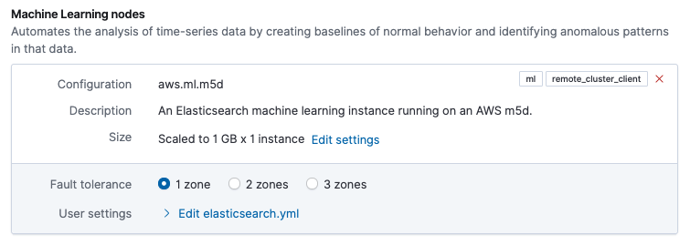

Autoscaling exampleedit
To help you better understand the available autoscaling settings, this example describes a typical autoscaling workflow on sample Elastic Cloud Enterprise deployment that has two data tiers and a machine learning node.
-
Enable autoscaling:
- When you upgrade a deployment from a stack version in which autoscaling is not supported (prior to version 7.11) to a version in which it is supported (version 7.11 or higher), after the upgrade completes a message indicates that autoscaling is available. You can enable it simply using the button in the message.
- On a newly created deployment with stack version 7.11 or higher, open the deployment Edit page to find the option to turn on autoscaling.
-
When you create a new deployment, use the Customize option to find the autoscaling option.
Once you confirm your changes or create a new deployment, autoscaling is activated with system default settings that you can adjust as needed (though for most use cases the default settings will likely suffice).
-
View and adjust autoscaling settings on data tiers:
-
Open the Edit page for your deployment to get the current size of each Elasticsearch data tier. In this example, a hot data and content tier on a memory optimized configuration has a current size of
1GB x 1 instance. A warm data tier on a storage optimized configuration has a current size of4GB x 1 instance. Both tiers have their fault tolerance set to 2 availability zones.Capacity will be added to each data tier when required, based on its past and present storage usage. To increase capacity, the first data tier instance is scaled up until it reaches its maximum instance size per tier, and then additional instances are added as needed. Any scaling events are applied to instances in each availability zone, simultaneously.

-
On the Edit page, the section for each data tier has an Edit settings link that you can open to view and adjust the tier’s autoscaling settings. In this example, on the hot data and content tier the Maximum size per zone is set to
116GB(58GB RAM x 2 instances) and the Current size per zone is1GB(1GB RAM x 1 instance). The tier has plenty of room to scale relative to its current size, and it will not scale above the maximum size setting. There is no minimum size setting since downward scaling is currently not supported on data tiers.For the hot data and content tier, under Advanced settings you can also view and set the Forecast window which defaults to 30 minutes. This is the duration of time up to the present that is taken into account to determine when scaling is required for the tier. It’s recommended for most cases to leave this setting at the default value.

-
-
View and adjust autoscaling settings on a machine learning node:
-
Like the data tiers, from the deployment Edit page you can check the current size of the machine learning nodes. In this example, the machine learning node has a current size of
1GB RAM x 1 instanceand the fault tolerance is set to 1 availability zone.Capacity will be added to or removed from the machine learning nodes as needed. To increase capacity, the first machine learning instance is scaled up until it reaches its maximum amount of RAM per instance, and then additional instances are added as needed. The need for a scaling event is determined by the expected memory requirements for the currently configured machine learning job. Any scaling events are applied to instances in each availability zone, simultaneously.
 -
On the Edit page, the section for the machine learning node has an Edit settings link that you can open to view and adjust the autoscaling settings for the node. Because machine learning nodes support both upward and downward scaling, a minimum and maximum size per zone are shown. In this example, these are set to
1 GB(1GB RAM x 1 instance) and60GB(60GB RAM x 1 instance), respectively. Autoscaling events will not exceed these set boundaries. Note that unlike data tiers, machine learning nodes do not have a Current size per zone setting. That setting is not needed since machine learning nodes support both upward and downward scaling.
-
- Over time, the volume of data and the size of any machine learning jobs in your deployment are likely to grow. Let’s assume that to meet storage requirements your hot data tier has scaled up to its maximum allowed size of 116GB. At this point, a notification appears on the deployment overview page indicating that the tier has scaled to capacity.
- If you expect a continued increase in either storage or memory requirements, you can use the Edit settings links to adjust the maximum capacity settings for your data tiers and machine learning nodes, as appropriate. And, you can always re-adjust these levels downward if the requirements change.
As you can see, autoscaling greatly reduces the manual work involved to manage a deployment. The deployment capacity adjusts automatically as demands change, within the boundaries that you define. Check our main Deployment autoscaling page for more information.